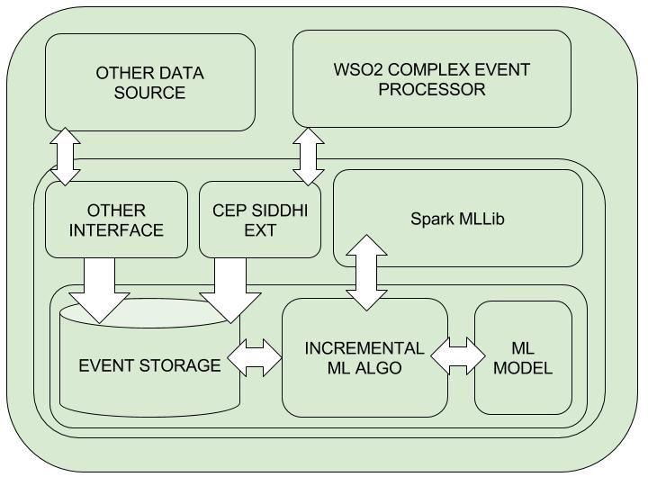
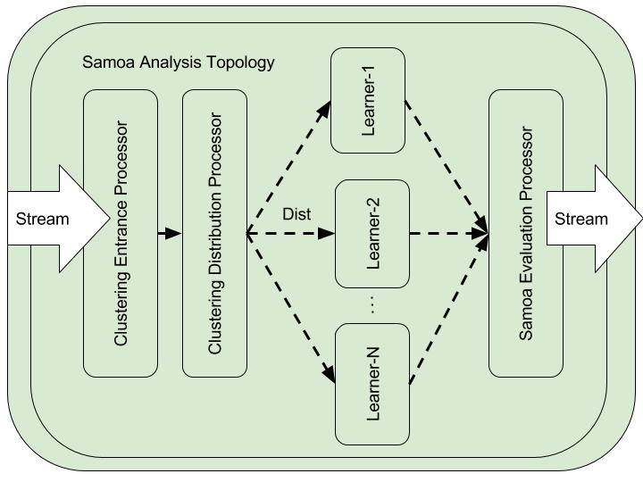
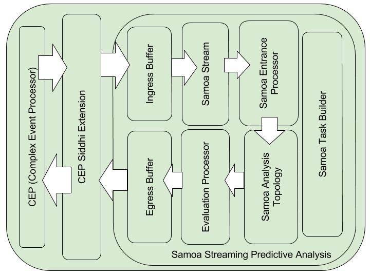

This Blog Contains the summary of the Google Summer of Code 2016 project with WSO2 and also the Link needed for final evaluation is given at last. This blog is organized in the following way.
- Overview
- Batch-Processing Vs Streaming Learning
- Apache Spark & Mini-Batch Learning
- Apache SAMOA & Streaming Learning
- WSO2 ML (Machine Learner)
- WSO2 CEP (Complex Event Processor)
- Solution
- Architecture
- Implementation
- Getting Started
- WSO2 Siddhi Query for Streaming ML analysis
- GSOC Final Evaluation Links
Overview
This project is to implement incremental machine learning algorithms to re-train machine learning models real time extending WSO2 Machine Learner (ML) for predictive big data analysis with the streaming support and WSO2 CEP (Complex Event Processor) extension support which can be deployed distributedly for massive online analysis. This solution provide hybrid and easily adoptable solution for both volume centric and velocity focused big-data analysis realizing the nature and the form of the big data. Therefore anlaysing data real-time with reduced latencies with incremental machine learning algorithms such as GSD (Stochastic Gradient Descent) Optimization and mini-batch processing with the concepts such as data horizon and data obsolences is the primary focus of the initial project. you can find the WSO2 project idea here and my project proposal here.
Batch-Processing Vs Streaming Learning
It is paramount imporatant to underestand the nature of the analysis to come up with a soultion for data analysis.Batch-Processing and supported algorithms for retrain ML models are to address the increasing vloume of the data. But with the rapid growth of the Internet of things (IoT) the velocity of the data is becoming vital to reduce the responce time such as in the case of sensor data processing. Mini-Batch processing is the easier way to handle large scale data which can be processed distributedly and independently. Batch Processing is the efficient way to address high volume of data where algorithms such as MapReduce are used to divide massive datasets across multiple distributed clusters for processing. But studies has shown that to extract near real tim insight of massive data, it is much better to use streaming learning. But with the nature if data it is paramount important to handle two scenarios in a hybrid soultion to handle both adoptably.
Apache Spark and Mini-Batch Processing
Spark has mini-batch processing based incremetal algorithms which is currenlty one of best solution for distributed processing with the fastest MapReduce algorithm than Hadoop. And also Spark has streaming solution which divide massive data sets or data streams into distributed streams and process against incremental algorithms. Apache Spark has a incremental learning algorithm support sudh as mini-batch algorithms, (SGD) stochastic gradient optimizations. Storm is the underlying distributed stream processing framework for spark. Thei streaming solution is advances to their MLLib, which mae use of same set of algorithms upon distributed streams fro streaming analysis. Therefore Spache Spark is ideal for handling high volume of data rather than processing faster which may be the case in extracting near insight of streaming learning. Most important factor is that even though the Apache Spark support mini-nbatch learning we can extensd its features to train models and retrain them as streams in real time as micro batches by reducing the batch size. This is not encouraged when the massive data volume is the critical factor for the anlaysis. Because in the batch-processing there is always a additional delay. Batch processing is really good for the situation where we need strategic insight when there is no need to process data in real time. Therefore spark is ideal for mini-batch processing scenarios.
Apache SAMOA and Streaming Learning
SAMOA (Scalable and Massive Online Analysis) is one of the emerging technologies that can be used for streaming analysis in real time. This SAMOA has already solved the scalability issues arised with its predecesors MOA, WEKA etc. This SAMOA is processing streams real time and can do fast retraining in real time analysis. And also SAMOA can be deplyed distributedly and process in a distributed cluster which can be powered by Storm, Samza and S4.With the scalable and flexible architecture SAMOA can support streaming learning with massive data. And also it can support both types of streaming learning. 1. Native Stream Processing (tuple-at-a-time processing). 1. Micro Batch Processing.
Both approaches have it's pros and cons. If we need to do massive analysis and resond real time, the native learning approach is more appropriate. Though this apprach is resulting in lowest possible latency, as long as the data volume is getting bigger it is not computationally efficient.In that case processing can be done as micro-batch processing with relevant ML algorithms. More importantly SAMOA provides basic building blocks wchich can be used for comples streaming analysis topologies which make it more scalable. You can find more information on Apache SAMOA here.
WSO2 ML (Machine Learner)
WSO2 use carbon-ml as their machine learning (ML) backbone which is based on the famous Apache Spark. With objective of supporting Big Data with a massive online analysis their intial project idea to extend their ML capabilities to real time retrain ML models with time without forgetting past which is the current scenario. Therefore the objective is to retrain with present data and past insight of data (basically the past ML models) and retain them fro predictions with prediction streams. In this way they do not need to store massive amount of datasets to training where model contains the insight of data. Currently WSO2 ML has different extensions to work with their CEP (Complex Event Processor) which is their stream/event-processing solution. For more information and documentation of WSO2 ML please check here. Ultimate objective of this project is to develop API with a CEP siddhi extension that can be deployed on carbon-ml and as well as standalone siddhi extension.
WSO2 CEP (Complex Event Processor)
CEP is their main event/stream processing framework which is built upon Apache Storm for distribution. CEP can handle streams and events in better way so we can perform integration, division etc. Therefore CEP has the potential to act as a stream processing engine which is similar to Apache spark streaming. CEP can deploy CEP siddhi extensions which are very easy to build and integrate with the CEP and siddhi queries. Complete set if instructions and guidance i used to develop CEP siddhi extension for my analysis is build with the help of WSO2 documentations of ML CEP extension. And also integration of the extensions with the CEP was done with this blog. For more information on WSO2 CEP can be found here. In my solution i have created three CEP siddhi extensions for my project.
Solution
We have provided the two solutions based on the WSO2 ML team requirement. This two solutions address two different aspects of big real time data analysis. high data volume aware solution which can address streaming learning and purely streaming aware solution which can address the volume by using micro-batch processing. They are spark based and samoa based real time predictive big data analysis. According to the WSO2 project idea the first implementation is based on the Apache Spark mini-batch processing and incremental learning algorithms such as SDG (Stochastic Gradient Descent) Optimization for Streaming Linear Regression, mini-batch clustering for streaming Kmeans Clustering. Both algorithms periodically retrain and update the ML model and both have their own CEP siddhi extension to invoke from CEP side for predictive analysis. But additionally after mid-review of GSOC WSO2 ML is looking for much better streaming solution. Therefore i have do review on SAMOA framework and integrate it with the cep for high end streaming learning. Therefore As the second phase of my project i have to integrate novel and advanced samoa architecture for real time streaming predictive analysis with a CEP siddhi extension support to deply in the CEP side.Therefore in the complete project i have developed three core modules,
- Apache Spark based Streaming Linear Regression with mini-batch SGD (Stochastic Gradient Descent) Optimization
- Apache Spark Based Streaming Kmeans Clustering with mini-batch clustering
- Apache Samoa Based Streaming Clustering (Integration of SAMOA with WSO2 CEP)
Architecture
- Spark Based Real Time Predictive Big Data Analysis
Both Streaming Linear Regression with SGD and Streaming Clustering withi mini-batch clustering is based on the same architetcure with different Siddhi extensions and core classes. In both spark cases Streaming classes inside my API handles the mini-batch processing.

Though the classes are named as Streaming.. they can use for both cases mini-batch learning and streaming learning. Spark based architecture is purely mini-batch learning and samoa based implementation is native streaming learning one. But as long as they have opposite counterparts we can use two implementations wiseversa. We can use saprk based implementation for streaming by reducing batch sizes to micro batches and we can use samoa based architecture to micro-batch learning. In the spark case the learning cycles are based on the minibatches and not as streams which may be good for high volume of data.
- Samoa Based Real Time Massive Predictive Analysis
Integration of SAMOA (Scalable and Massive Online Analysis) with WSO2 CEP is a challenging task. To do that i had to go through both CEP architecture and SAMOA architecture. In Samoa by using their basic building blocks we can create new predictive analysis ML topologies to train ML models learn from data by extracting insight of near massive data. To integrate SAMOA with the new framework such as WSO2 CEP, we should have a good knowledge to handle samoa blocks. By this way we can feed data coming from the CEP to SAMOA ML topologies built for our purposes. To make use of the SAMOA for custom integration please look at samoa here. For CEP and our API integration SAMOA, customized SAMOA modules are used which we will discussed in the Implementation. In the SAMOA integration its is paramount important to decide the architecture for core to handle data as streams for real time learning. You can find a custom SMOA Task which can be build with basic SAMOA component in the following.

Overall Architecture of the SAMOA based implementation is looks like below when SAMOA is integrated with CEP extension to feed data streams. Because of th simple and distributed nature of the SAMOA, it is very easy to build complex and massive streaming analysis topologies with SAMOA building blocks. As a initial steps we have build a SAMOA streaming clustering topology as shown in the above figure to analyses stream data on-line. More details of the implementation can be found in Implementation.

Both implementations anre JAVA based implementations. Samoa is using instances and InstanceStreams not Events and EventStreams like in CEP. Therefore stream data is buffered and convert from CEP events to SAMOA instances for analysis. CEP has their native ExecutionPlans to invoke predictive analysis which is used to build the predictive analysis Task in SAMOA core. Because of this preserving streaming analysis architecture for data streams as it is, model is retrained at every instance.
Flexibility and Adjust ability
We have parameterized both implementations and three scenarios where user can easily specify the type and nature of big data analysis that need. If we take analysis wise we have two: Streaming Linear Regression and Streaming Clustering analysis. We have three scenarios if we look at implementation wise. Both Streaming Linear regression and Steaming Clustering with Spark and Streaming Clustering with SAMOA. If we take analysis wide user can adjust following parameters.
- Learn Type: Learning method (batch-window, moving-batch-window, time-window)
- Window-Shift: Apply only when the moving batch window is applied
- Mini-Batch - Size: How often the ML model get retrained or updated
- Number of iteration: Number of iteration runs on the SGD algorithms
- Step-Size: related to Step Size of the SGD optimization algorithm.
- Mini-Batch Fraction: Fraction of the mini-Batch to process at every iteration in SGD algorithm.
- Confidence Interval : This is for future use if there will be any requirement
- Variable-List : feature Vector of the Data point
For the Streaming Clustering Analysis user can adjust following parameters according to the nature of the analysis.
- Learn Type: Learning method (batch-window, moving-batch-window, time-window)
- Window-Shift: Apply only when the moving batch window is applied
- Mini-Batch - Size: How often the ML model get retrained or updated
- Number of iteration: Number of iteration runs on the SGD algorithms
- Number of Clusters: Number of Clusters need for us
- Alpha : Decay Factor which can be used for Data obsolescence
- Confidence Interval : This is for future use if there will be any requirement
- Variable-List : feature Vector of the Data
Implementation
Implementation consist of three main components and three main CEP siddhi StreamProcessor Extensions,
- StreamingLinearRegression - Streaming Linear Regression with SGD based on Spark
- StreamingKMeansClustering - Streaming KMeans Clustering based on Spark
- StreamingClustring - Streaming Clustering based on SAMOA
Dependencies
As long as i use Maven to build with dependencies i use these following dependencies in my pom.xml . WSO2 CEP Siddhi Dependencies
<dependency>
<groupId>org.wso2.siddhi</groupId>
<artifactId>siddhi-core</artifactId>
<version> 3.0.6-SNAPSHOT </version>
</dependency>
<dependency>
<groupId>org.wso2.siddhi</groupId>
<artifactId>siddhi-query-api</artifactId>
<version> 3.0.6-SNAPSHOT </version>
</dependency>
Apache Spark Dependencies
<dependency>
<groupId>org.apache.spark</groupId>
<artifactId>spark-core_2.10</artifactId>
<version>1.6.1</version>
</dependency>
<dependency>
<groupId>org.apache.spark</groupId>
<artifactId>spark-mllib_2.10</artifactId>
<version>1.6.1</version>
</dependency>
Apache SAMOA dependencies
<dependency>
<groupId>org.apache.samoa</groupId>
<artifactId>samoa-api</artifactId>
<version>0.4.0-incubating-SNAPSHOT</version>
</dependency>
<dependency>
<groupId>org.apache.samoa</groupId>
<artifactId>samoa-local</artifactId>
<version>0.4.0-incubating-SNAPSHOT</version>
</dependency>
Samoa dependencies are important. Since latest version of samoa 0.4.0-incubator is not in the maven repository you have two options. Either find remote repository or build samoa latest locally. In my case i use locally built Samoa 0.4.0-incubator. For more information of getting started with SAMOA click here . May be this link will be helpful too. And also please use the below dependency since it is using in SAMOA.
<dependency>
<groupId>com.github.javacliparser</groupId>
<artifactId>javacliparser</artifactId>
<version>0.5.0</version>
</dependency>
WSO2 CEP Siddhi Extension
All three components have their native CEP siddhi extensions based on the StreamProcessor Extension. CEP Extension is a one way of using the core components with outside data streams.These are the three classes extending CEP StreamProcessor.
public class StreamingLinearRegressionStreamProcessor extends StreamProcessor
public class StreamingKMeansClusteringStreamProcessor extends StreamProcessor
public class StreamingClusteringWithSamoaStreamProcessor extends StreamProcessor
And also to publish these extensions on the CEP server we have to follow two steps. We have to add following lines to .siddhiext file in the resources.
streamlinreg=org.wso2.carbon.ml.siddhi.extension.streamingml.StreamingLinearRegressionStreamProcessor
streamclustering=org.wso2.carbon.ml.siddhi.extension.streamingml.StreamingKMeansClusteringStreamProcessor
streamclusteringsamoa=org.wso2.carbon.ml.siddhi.extension.streamingml.StreamingClusteringWithSamoaStreamProcessor
Streaming Linear Regression with SGD based on Spark
Streaming Linear Regression classes are developed in the following way. If anyone want to use it without CEP siddhi extension, you have to intantiate the StreamingLinearRegression Class with correct parameters. Then call regress() function in the class with data points as double[].
public StreamingLinearRegression(int learnType,int windowShift,int paramCount, int batchSize, double ci, int numIteration, double stepSize, double miniBatchFraction)
then call the regression function regress()
public Object[] regress(Double[] eventData)
Streaming KMeans Clustering based on Spark
Streaming KMeans Clustering can be used either as a cep extension or standalone API. you just need to instantiate the StreamingKMeansClustering class with relevant parameters.
StreamingKMeansClustering(int learnType, int windowShift, int numAttributes, int batchSize, double ci, int numClusters, int numIterations, double alpha)
and also you just need to call the cluster() function with data point or event as double[]
public Object[] cluster(Double[] eventData)
Streaming Clustering based on SAMOA
Even though the internal structure and functionality is different than the Spark based streaming clustering solution you can use same call and instantiation for the StreamingClustering with Samoa based implementation.
public StreamingClustering(int learnType,int paramCount, int batchSize, double ci, int numClusters,int numIteration, double alpha){
to train the model with data/event with the correct instantiation you have to call cluster() function
public Object[] cluster(double[] eventData)
Getting Started
WSO2 Siddhi Queries for Streaming Analysis
GSOC Final Evaluation Links
Creating pages manually
If you prefer to not use the automatic generator, push a branch named gh-pages to your repository to create a page manually. In addition to supporting regular HTML content, GitHub Pages support Jekyll, a simple, blog aware static site generator. Jekyll makes it easy to create site-wide headers and footers without having to copy them across every page. It also offers intelligent blog support and other advanced templating features.
Authors and Contributors
You can @mention a GitHub username to generate a link to their profile. The resulting <a> element will link to the contributor’s GitHub Profile. For example: In 2007, Chris Wanstrath (@defunkt), PJ Hyett (@pjhyett), and Tom Preston-Werner (@mojombo) founded GitHub.
Support or Contact
Having trouble with Pages? Check out our documentation or contact support and we’ll help you sort it out.